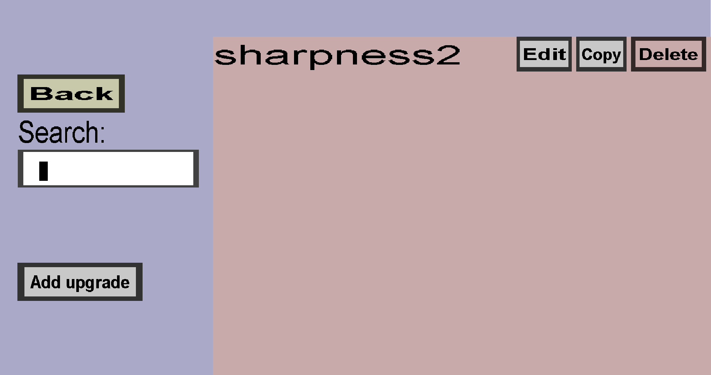

The upgrade overview can be used to view, create, and edit upgrades. Upgrades can be used in custom crafting recipes or container recipes to upgrade (improve) one of the ingredients. Upgrades can consist of enchantments, attribute modifiers, damage resistances, and variables. Check this page for details.
For instance, you could create an upgrade that adds the feather falling enchantment and create a crafting recipe that turns leather boots and 8 feathers into leather boots with the feather falling enchantment. Note that upgrade recipes consist of 2 parts:
This overview, the upgrade overview, only deals with The upgrades, and not with the recipes. If you have a single upgrade called sharpness2, it should look like this:
